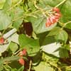

Fertility Improving Measures
Green Manures
{kind=link}
A green manure crop is planted with the primary purpose of incorporating that crop into the soil for soil improvement. Green manure crops may be legumes or nonlegumes. Most frequently, green manure crops are selected for their nitrogen fixing qualities (legumes) and/or their quality as animal fodder. In most cases the green manure crop is not incorporated into the soil by mechanical tillage, but rather is left on the soil surface as mulch. Green manure crops provide inexpensive, "on farm" sources of nitrogen and organic matter, these increase the soil's absorptive and biochemical processes.
Organic Fertilizers
Fertilizers composed of plant and animal remains from living organisms. Emphasis is in given to on-farm integrated systems that reduce the need for purchasing expensive chemical fertilizers and thus lead to reduced production costs, key to maintaining the small landholder's competitive advantage.
Composting
Composting is an extension of the transformative process that is going on continuously in nature. For farmers this is a process of adding labor to animal and plant residues and converting these into a valuable on-farm fertilizer for the enrichment of soil and the growing for the next generation of crops.